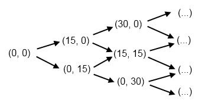

10. Event-Driven Programming¶
Most programs and devices like a cellphone respond to events — things that happen. For example, you might move your mouse, and the computer responds. Or you click a button, and the program does something interesting. In this chapter we’ll touch very briefly on how event-driven programming works.
10.1. Keypress events¶
Here’s a program with some new features. Copy it into your workspace, run it. When the turtle window opens, press the arrow keys and make tess move about!
1 2 3 4 5 6 7 8 9 10 11 12 13 14 15 16 17 18 19 20 21 22 23 24 25 26 27 28 29 30 31 32 | import turtle
turtle.setup(400,500) # Determine the window size
wn = turtle.Screen() # Get a reference to the window
wn.title("Handling keypresses!") # Change the window title
wn.bgcolor("lightgreen") # Set the background color
tess = turtle.Turtle() # Create our favorite turtle
# The next four functions are our "event handlers".
def h1():
tess.forward(30)
def h2():
tess.left(45)
def h3():
tess.right(45)
def h4():
wn.bye() # Close down the turtle window
# These lines "wire up" keypresses to the handlers we've defined.
wn.onkey(h1, "Up")
wn.onkey(h2, "Left")
wn.onkey(h3, "Right")
wn.onkey(h4, "q")
# Now we need to tell the window to start listening for events,
# If any of the keys that we're monitoring is pressed, its
# handler will be called.
wn.listen()
wn.mainloop()
|
Here are some points to note:
- We need the call to the window’s listen method at line 31, otherwise it won’t notice our keypresses.
- We named our handler functions h1, h2 and so on, but we can choose better names. The handlers can be arbitrarily complex functions that call other functions, etc.
- Pressing the q key on the keyboard calls function h4 (because we bound the q key to h4 on line 26). While executing h4, the window’s bye method (line 24) closes the turtle window, which causes the window’s mainloop call (line 31) to end its execution. Since we did not write any more statements after line 32, this means that our program has completed everything, so it too will terminate.
- We can refer to keys on the keyboard by their character code (as we did in line 26), or by their symbolic names. Some of the symbolic names to try are Cancel (the Break key), BackSpace, Tab, Return(the Enter key), Shift_L (any Shift key), Control_L (any Control key), Alt_L (any Alt key), Pause, Caps_Lock, Escape, Prior (Page Up), Next (Page Down), End, Home, Left, Up, Right, Down, Print, Insert, Delete, F1, F2, F3, F4, F5, F6, F7, F8, F9, F10, F11, F12, Num_Lock, and Scroll_Lock.
10.2. Mouse events¶
A mouse event is a bit different from a keypress event because its handler needs two parameters to receive x,y coordinate information telling us where the mouse was when the event occurred.
1 2 3 4 5 6 7 8 9 10 11 12 13 14 15 16 17 | import turtle
turtle.setup(400,500)
wn = turtle.Screen()
wn.title("How to handle mouse clicks on the window!")
wn.bgcolor("lightgreen")
tess = turtle.Turtle()
tess.color("purple")
tess.pensize(3)
tess.shape("circle")
def h1(x, y):
tess.goto(x, y)
wn.onclick(h1) # Wire up a click on the window.
wn.mainloop()
|
There is a new turtle method used at line 14 — this allows us to move the turtle to an absolute coordinate position. (Most of the examples that we’ve seen so far move the turtle relative to where it currently is). So what this program does is move the turtle (and draw a line) to wherever the mouse is clicked. Try it out!
If we add this line before line 14, we’ll learn a useful debugging trick too:
wn.title("Got click at coords {0}, {1}".format(x, y))
Because we can easily change the text in the window’s title bar, it is a useful place to display occasional debugging or status information. (Of course, this is not the real purpose of the window title!)
But there is more!
Not only can the window receive mouse events: individual turtles can also have their own handlers for mouse clicks. The turtle that “receives” the click event will be the one under the mouse. So we’ll create two turtles. Each will bind a handler to its own onclick event. And the two handlers can do different things for their turtles.
1 2 3 4 5 6 7 8 9 10 11 12 13 14 15 16 17 18 19 20 21 22 23 24 25 26 | import turtle
turtle.setup(400,500) # Determine the window size
wn = turtle.Screen() # Get a reference to the window
wn.title("Handling mouse clicks!") # Change the window title
wn.bgcolor("lightgreen") # Set the background color
tess = turtle.Turtle() # Create two turtles
tess.color("purple")
alex = turtle.Turtle() # Move them apart
alex.color("blue")
alex.forward(100)
def handler_for_tess(x, y):
wn.title("Tess clicked at {0}, {1}".format(x, y))
tess.left(42)
tess.forward(30)
def handler_for_alex(x, y):
wn.title("Alex clicked at {0}, {1}".format(x, y))
alex.right(84)
alex.forward(50)
tess.onclick(handler_for_tess)
alex.onclick(handler_for_alex)
wn.mainloop()
|
Run this, click on the turtles, see what happens!
10.3. Automatic events from a timer¶
Alarm clocks, kitchen timers, and thermonuclear bombs in James Bond movies are set to create an “automatic” event after a certain interval. The turtle module in Python has a timer that can cause an event when its time is up.
1 2 3 4 5 6 7 8 9 10 11 12 13 14 15 16 17 | import turtle
turtle.setup(400,500)
wn = turtle.Screen()
wn.title("Using a timer")
wn.bgcolor("lightgreen")
tess = turtle.Turtle()
tess.color("purple")
tess.pensize(3)
def h1():
tess.forward(100)
tess.left(56)
wn.ontimer(h1, 2000)
wn.mainloop()
|
On line 16 the timer is started and set to explode in 2000 milliseconds (2 seconds). When the event does occur, the handler is called, and tess springs into action.
Unfortunately, when one sets a timer, it only goes off once. So a common idiom, or style, is to restart the timer inside the handler. In this way the timer will keep on giving new events. Try this program:
1 2 3 4 5 6 7 8 9 10 11 12 13 14 15 16 17 | import turtle
turtle.setup(400,500)
wn = turtle.Screen()
wn.title("Using a timer to get events!")
wn.bgcolor("lightgreen")
tess = turtle.Turtle()
tess.color("purple")
def h1():
tess.forward(100)
tess.left(56)
wn.ontimer(h1, 60)
h1()
wn.mainloop()
|
10.4. An example: state machines¶
A state machine is a system that can be in one of a few different states. We draw a state diagram to represent the machine, where each state is drawn as a circle or an ellipse. Certain events occur which cause the system to leave one state and transition into a different state. These state transitions are usually drawn as an arrow on the diagram.
This idea is not new: when first turning on a cellphone, it goes into a state which we could call “Awaiting PIN”. When the correct PIN is entered, it transitions into a different state — say “Ready”. Then we could lock the phone, and it would enter a “Locked” state, and so on.
A simple state machine that we encounter often is a traffic light. Here is a state diagram which shows that the machine continually cycles through three different states, which we’ve numbered 0, 1 and 2.

We’re going to build a program that uses a turtle to simulate the traffic lights. There are three lessons here. The first shows off some different ways to use our turtles. The second demonstrates how we would program a state machine in Python, by using a variable to keep track of the current state, and a number of different if statements to inspect the current state, and take the actions as we change to a different state. The third lesson is to use events from the keyboard to trigger the state changes.
Copy and run this program. Make sure you understand what each line does, consulting the documentation as you need to.
1 2 3 4 5 6 7 8 9 10 11 12 13 14 15 16 17 18 19 20 21 22 23 24 25 26 27 28 29 30 31 32 33 34 35 36 37 38 39 40 41 42 43 44 45 46 47 48 49 50 51 52 53 54 55 56 57 58 59 60 61 62 63 64 | import turtle # Tess becomes a traffic light.
turtle.setup(400,500)
wn = turtle.Screen()
wn.title("Tess becomes a traffic light!")
wn.bgcolor("lightgreen")
tess = turtle.Turtle()
def draw_housing():
""" Draw a nice housing to hold the traffic lights """
tess.pensize(3)
tess.color("black", "darkgrey")
tess.begin_fill()
tess.forward(80)
tess.left(90)
tess.forward(200)
tess.circle(40, 180)
tess.forward(200)
tess.left(90)
tess.end_fill()
draw_housing()
tess.penup()
# Position tess onto the place where the green light should be
tess.forward(40)
tess.left(90)
tess.forward(50)
# Turn tess into a big green circle
tess.shape("circle")
tess.shapesize(3)
tess.fillcolor("green")
# A traffic light is a kind of state machine with three states,
# Green, Orange, Red. We number these states 0, 1, 2
# When the machine changes state, we change tess' position and
# her fillcolor.
# This variable holds the current state of the machine
state_num = 0
def advance_state_machine():
global state_num
if state_num == 0: # Transition from state 0 to state 1
tess.forward(70)
tess.fillcolor("orange")
state_num = 1
elif state_num == 1: # Transition from state 1 to state 2
tess.forward(70)
tess.fillcolor("red")
state_num = 2
else: # Transition from state 2 to state 0
tess.back(140)
tess.fillcolor("green")
state_num = 0
# Bind the event handler to the space key.
wn.onkey(advance_state_machine, "space")
wn.listen() # Listen for events
wn.mainloop()
|
The new Python statement is at line 46. The global keyword tells Python not to create a new local variable for state_num (in spite of the fact that the function assigns to this variable at lines 50, 54, and 58). Instead, in this function, state_num always refers to the variable that was created at line 42.
What the code in advance_state_machine does is advance from whatever the current state is, to the next state. On the state change we move tess to her new position, change her color, and, of course, we assign to state_num the number of the new state we’ve just entered.
Each time the space bar is pressed, the event handler causes the traffic light machine to move to its new state.
10.5. Glossary¶
- bind
- We bind a function (or associate it) with an event, meaning that when the event occurs, the function is called to handle it.
- event
- Something that happens “outside” the normal control flow of our program, usually from some user action. Typical events are mouse operations and keypresses. We’ve also seen that a timer can be primed to create an event.
- handler
- A function that is called in response to an event.
10.6. Exercises¶
Add some new key bindings to the first sample program:
- Pressing keys R, G or B should change tess’ color to Red, Green or Blue.
- Pressing keys + or - should increase or decrease the width of tess’ pen. Ensure that the pen size stays between 1 and 20 (inclusive).
- Handle some other keys to change some attributes of tess, or attributes of the window, or to give her new behaviour that can be controlled from the keyboard.
Change the traffic light program so that changes occur automatically, driven by a timer.
In an earlier chapter we saw two turtle methods, hideturtle and showturtle that can hide or show a turtle. This suggests that we could take a different approach to the traffic lights program. Modify the program so that we create three separate turtles for each of the green, orange and red lights, and instead of moving tess to different positions and changing her color, we just make one of the three turtles visible at any time. Once you’ve made the changes, sit back and ponder some deep thoughts: you’ve got two programs, both seem to do the same thing. Is one approach somehow preferable to the other? Which one more closely resembles reality — i.e. the traffic lights in your town?
Now that you’ve got a traffic light program with different turtles for each light, perhaps the visibility / invisibility trick wasn’t such a great idea. If we watch the traffic lights, they turn on and off — but when they’re off they are still there, perhaps just a darker color. Modify the program now so that the lights don’t disappear: they are either on, or off. But when they’re off, they’re still visible.
Your traffic light controller program has been patented, and you’re about to become seriously rich. But your new client needs a change. They want four states in their state machine: Green, then Green and Orange together, then Orange only, and then Red. Additionally, they want different times spent in each state. The machine should spend 3 seconds in the Green state, followed by one second in the Green+Orange state, then one second in the Orange state, and then 2 seconds in the Red state. Change the logic in the state machine.
If you don’t know how tennis scoring works, ask a friend or consult Wikipedia. A single game in tennis between player A and player B always has a score. We want to think about the “state of the score” as a state machine. The game starts in state (0, 0), meaning neither player has any score yet. We’ll assume the first element in this pair is the score for player A. If player A wins the first point, the score becomes (15, 0). If B wins the first point, the state becomes (0, 15). Below are the first few states and transitions for a state diagram. In this diagram, each state has two possible outcomes (A wins the next point, or B does), and the uppermost arrow is always the transition that happens when A wins the point. Complete the diagram, showing all transitions and all states. (Hint: there are twenty states, if you include the duece state, the advantage states, and the “A wins” and “B wins” states in your diagram.)
